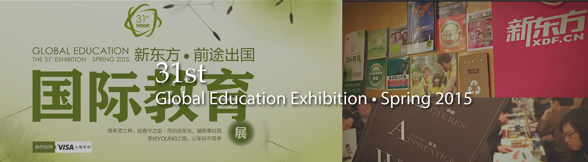
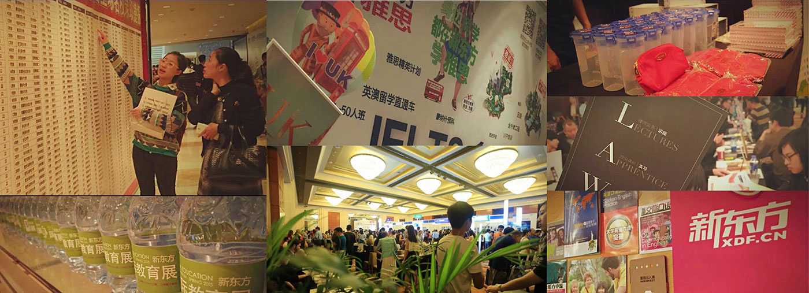

January to March 2015
Graphic Design
Graphic Design Intern
New Oriental Education & Tech Grp, Shanghai
Advised by senior graphic desinger Xiaoli Zhu
Printed materials design
Poster,brochures, business card, various exhibition boards design
Global Education Exhibition held by New Oriental Education & Tech Grp was to help students get access to admission team from international universities. Hundreds of university admission teams from U.S., Europe, England, Australia, Canada were invited to this exhibition. Students can consult admission policy and related information at this exhibition. Staffs from New Oriental also offered professional guide to students who want to study abroad.

As a graphic design intern, my responsibility was to design posters, brochures, business card, various exhibition boards which were used in this exhibition. Because of the company's rules, I was not allowed to show the original design draft/pictures. The pictures above display the different printed materials I designed in this exhibition.
It was the first time for me to work in a big company as a graphic design intern. The basic graphic software skills, such as Adobe Illustrator, Adobe Photoshop and Adobe InDesign, practiced a lot during this intern period. Considering the company branding, the graphic design work is different from the design projects in school. Because the primary/secondary color, font family/size, design style were already defined within the company. I learned how to optimized the creative space when also sticked to the branding design rules which were defined by the company. Thanks a lot to my mentor, XiaoLi Zhu, she did taught me many useful and practical design skills in the industry.
© 2017 My Profile. All Rights Reserved | Design by Chenghong